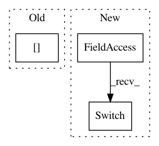

f7a51531030d64f7a4007deceaf1a2eb19c6e7c1,theanolm/layers/lstmlayer.py,LSTMLayer,_create_time_step,#LSTMLayer#Any#Any#Any#Any#Any#Any#Any#,119
Before Change
// Apply the mask.
C_out = mask[:, None] * C_out + (1.0 - mask)[:, None] * C_in
h_out = mask[:, None] * h_out + (1.0 - mask)[:, None] * h_in
return C_out, h_out
After Change
// XXX C_out = mask[:,None] * C_out + (1.0 - mask)[:,None] * C_in
// XXX h_out = mask[:,None] * h_out + (1.0 - mask)[:,None] * h_in
C_out = tensor.switch(mask[:,None], C_out, C_in)
h_out = tensor.switch(mask[:,None], h_out, h_in)
return C_out, h_out
In pattern: SUPERPATTERN
Frequency: 3
Non-data size: 3
Instances
Project Name: senarvi/theanolm
Commit Name: f7a51531030d64f7a4007deceaf1a2eb19c6e7c1
Time: 2015-12-11
Author: seppo.git@marjaniemi.com
File Name: theanolm/layers/lstmlayer.py
Class Name: LSTMLayer
Method Name: _create_time_step
Project Name: senarvi/theanolm
Commit Name: f7a51531030d64f7a4007deceaf1a2eb19c6e7c1
Time: 2015-12-11
Author: seppo.git@marjaniemi.com
File Name: theanolm/layers/grulayer.py
Class Name: GRULayer
Method Name: _create_time_step
Project Name: pymc-devs/pymc3
Commit Name: 7a31475bb139893cd3fd2bd1dbc33d040a0511c8
Time: 2017-05-04
Author: aseyboldt@users.noreply.github.com
File Name: pymc3/distributions/multivariate.py
Class Name: MvNormal
Method Name: _logp_tau